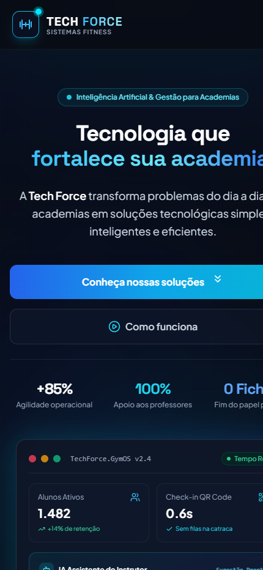
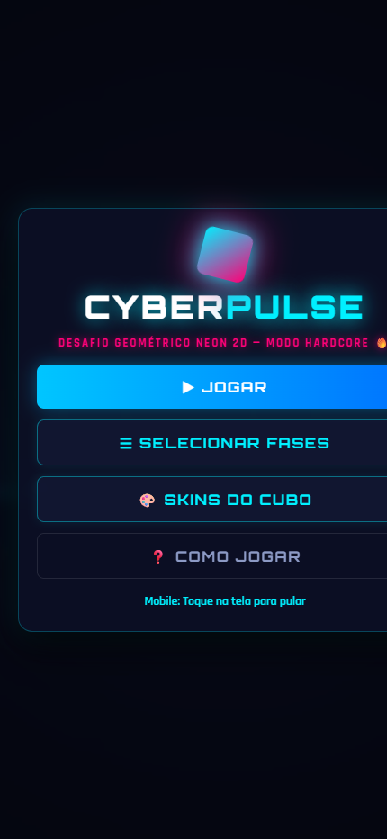

Construindo produtos digitais robustos, arquiteturas eficientes e experiências interativas de alto desempenho.
Desenvolvedor com foco em Engenharia de Sistemas, soluções web modernas e automações. Apaixonado por transformar ideias complexas em interfaces rápidas, intuitivas e bem estruturadas.
Tecnologias dominadas e aplicadas em produção:

Plataforma inovadora para academias que transforma o dia a dia operacional através de soluções tecnológicas inteligentes, inteligência artificial e interfaces intuitivas de alta conversão.
VISUALIZAR PROJETO
Jogo rítmico 2D hardcore cyberpunk ("Neon Dawn") renderizado via HTML5 Canvas em tempo real. Possui física de pulso dinâmico, HUD interativo, barra de progresso e síntese de áudio.
VISUALIZAR PROJETOConstrução de aplicações completas com foco em modularidade, código limpo, controle de estado e integração eficiente com APIs e bancos de dados.
Experiência prática na criação de interfaces ricas, animações fluidas via CSS/GSAP, renderização 2D Canvas e integração de gráficos 3D interativos.
Rotina estruturada de commits semânticos, gestão ágil de repositórios no GitHub e publicação contínua em plataformas como Vercel.
Entre em contato para novas oportunidades, projetos ou colaborações:
Valide a estabilidade do portfólio simulando as falhas descritas na Seção 9 dos requisitos.